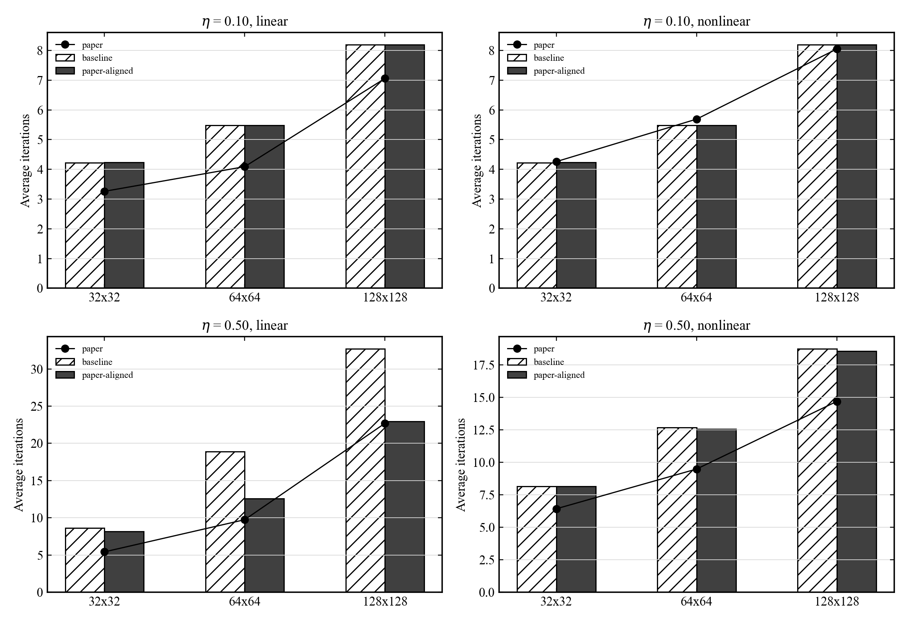

M3 Picard Average Iterations
Final M3 + Picard comparison. Baseline is the original checkpoint branch; paper-aligned uses Jacobi 5/5 and eta guard 1.1.
Average iteration comparison
The final aligned branch is closest to the paper for linear iterations, especially eta = 0.50 on 128x128. Nonlinear averages remain higher than the paper.
| eta | grid | variant | steps | avg linear | paper linear | linear diff | avg nonlinear | paper nonlinear | nonlinear diff | max nonlinear |
|---|---|---|---|---|---|---|---|---|---|---|
| 0.1 | 32 | aligned_guard_1p1 | 103 | 4.2330 | 3.2600 | +0.9730 | 4.2330 | 4.2600 | -0.0270 | 8 |
| 0.1 | 32 | baseline | 103 | 4.2233 | 3.2600 | +0.9633 | 4.2233 | 4.2600 | -0.0367 | 8 |
| 0.1 | 64 | aligned_guard_1p1 | 129 | 5.4806 | 4.0900 | +1.3906 | 5.4806 | 5.6900 | -0.2094 | 9 |
| 0.1 | 64 | baseline | 129 | 5.4806 | 4.0900 | +1.3906 | 5.4806 | 5.6900 | -0.2094 | 9 |
| 0.1 | 128 | aligned_guard_1p1 | 258 | 8.1899 | 7.0600 | +1.1299 | 8.1899 | 8.0500 | +0.1399 | 12 |
| 0.1 | 128 | baseline | 258 | 8.1899 | 7.0600 | +1.1299 | 8.1899 | 8.0500 | +0.1399 | 12 |
| 0.5 | 32 | aligned_guard_1p1 | 140 | 8.1571 | 5.4300 | +2.7271 | 8.1571 | 6.4300 | +1.7271 | 28 |
| 0.5 | 32 | baseline | 137 | 8.6204 | 5.4300 | +3.1904 | 8.1533 | 6.4300 | +1.7233 | 28 |
| 0.5 | 64 | aligned_guard_1p1 | 197 | 12.5685 | 9.7500 | +2.8185 | 12.5685 | 9.4900 | +3.0785 | 30 |
| 0.5 | 64 | baseline | 194 | 18.9124 | 9.7500 | +9.1624 | 12.6753 | 9.4900 | +3.1853 | 34 |
| 0.5 | 128 | aligned_guard_1p1 | 304 | 22.9704 | 22.7000 | +0.2704 | 18.5625 | 14.7000 | +3.8625 | 34 |
| 0.5 | 128 | baseline | 301 | 32.6944 | 22.7000 | +9.9944 | 18.7409 | 14.7000 | +4.0409 | 41 |